- مهارات استثنائية: يتميز الأبواب الحديدية بمهارات استثنائية وقدرة كبيرة على إنتاج أبواب حديد ذات جودة مرتفعة.
- اختيار المواد: يولى اهتمامًا كبيرًا لاختيار أفضل أنواع الحديد التي لا تشتعل ولا تصدأ وتقاوم الرطوبة.
- حماية عالية: يستخدم أفضل أنواع الطلاء لتلوين أبواب الحديد لحمايتها من الصدأ والعوامل الجوية القاسية.
- فريق عمل محترف: يمتلك طاقم عمل رائع ومحترف من الين المبدعين في تصميم أبواب حديد أنيقة ذات مظهر فاخر وجذاب.
- أدوات عصرية: يمتلك أبواب حديد أحدث التصاميم والأدوات العصرية لضمان إنتاج أبواب حديد تلبي جميع الأذواق.
- تنوع الأشكال: يمكنك في أبواب بالرياض العثور على كافة الأشكال العصرية المميزة التي ترغب فيها.
مظلات وسواتر القاسم الحديثة بالرياض 0532228615 | أبواب حديد
2026 | تصنيع وتوريد أبواب حديد ليزر بأعلى جودة - 0532228615
تصنيع وتوريد وتركيب أبواب حديد 0532228615
أبواب حديد بالرياض
أكتوبر 14, 2025
تصنيع وتوريد أبواب حديد الرياض ورشة على التصنيع والتوريد في هذا المجال، مما يسمح له بإتمام جميع أعمال ال بمهارة واحترافية عالية. بالإضافة إلى ذلك، يتوفر لديه فريق كفء يُجيد تصنيع وصيانة جميع أبواب وشبابيك الحديد التي تتوافق مع المواصفات العالمية. كل هذا يقدمه أبواب الحديد بأسعار تنافسية وجودة متميزة، حرصًا منه على إرضاء جميع العملاء.
مهارة واحترافية: فريق متخصص في جميع التركيب والتوريد والتصنيع بمواصفات عالمية.
أبواب حديد في الرياض 0532228615
أبواب حديد متنوعة - 0532228615
أكتوبر 14, 2025
يعتبر أبواب حديد في الرياض متخصصًا في هذا المجال، بسبب مهاراته الفنية التي تمكنه من تصنيع وإصلاح مجموعة متنوعة من الأبواب والنوافذ والمظلات الحديدية بالإضافة إلى أعمال أخرى، بما يتناسب مع احتياجات ورغبات العملاء، حرصًا منه على تلبية متطلبات العميل وما يفضله.
متنقلة ومتخصصة - رخيص وممتاز 0532228615
مؤسسة احترافية بالرياض 0532228615
أكتوبر 14, 2025
يتميز أبواب حديد في الرياض بوجود فريق عمل بارع ومتخصص في إنجاز جميع أعمال ال والات ببراعة ومهارة فائقة. ويعود ذلك إلى خبرته الواسعة في مجال ال، مما يمكّنه من التعامل مع الحديد بمختلف تشكيلاته وتصميماته بجودة وكفاءة عالية. لذلك، إذا كنت تبحث عن نتائج عمل استثنائية، يمكنك الاعتماد على أبواب حديد بالرياض، حيث سيقدم لك عملاً مميزًا يُناسب مستواه الحرفي والمهني.
من خلال ورشة متنقلة مخصصة له، يمكنه تقديم جميع أنواع التصاميم والتشكيلات المتنوعة في تشكيل الحديد مثل الكريتال، والشبابيك، والأبواب، وأعمال الحديد المختلفة، والتي يشرف عليها أفضل معلم في الرياض.
ومن المهم الإشارة إلى أن أبواب حديد يولي اهتمامًا كبيرًا لاستخدام أحدث التقنيات والأجهزة المتطورة، مما يضمن لكم نتائج مميزة. كما يلتزم معلم ال في الرياض بتقديم جميع خدماته وفقًا لمعايير الجودة العالمية.
جودة وأمانة: أحد أبرز ما يميز أبواب حديد القاسم هو اختياره لنوعية حديد ممتازة،
فضلاً
عن الأسعار المناسبة لجميع الزبائن، بالإضافة إلى الدقة والأمانة في الأداء والالتزام بالمواعيد المتفق
عليها للتسليم.
نستطيع العمل في جميع أيام الأسبوع، كما يمكننا التنقل للوصول إلى العملاء في كافة أنحاء الرياض والمناطق المحيطة بها أيضًا.
مميزات أبواب حديد القاسم
مميزات استثنائية
أكتوبر 14, 2025
يتميز بعدد من الخصائص التي جعلته يتفوق على جميع المنافسين، وفي ما يلي سنلقي الضوء على مميزات أبواب حديد:
أسعار الابواب
هل يوجد بأسعار رخيصة؟ نعم، نحن رخيص وممتاز 0532228615
أكتوبر 14, 2025
من المعروف أن أسعارنا تنافسية ومناسبة لجميع الزبائن، كما أنها تسعى لتقديم أفضل خدمة من خلال تصميم وتنفيذ أبواب وشبابيك حديد بتصميمات عصرية ومميزة، كما يمكنك الاعتماد علينا دون القلق حيال التكلفة لأننا نحرص على توفير خدمة تتناسب مع ميزانيتك.
تناسب جميع الميزانيات: نحرص على تقديم خدماتنا بأسعار تنافسية تناسب جميع الفئات دون
المساس بالجودة أو الاحترافية.
الخدمات التي يوفرها الأبواب الحديدية 0532228615
خدمات متكاملة وشاملة 0532228615
أكتوبر 14, 2025
تقدم أبواب حديد في الرياض خدمة تصميم وتنفيذ جميع أنواع أبواب الحديد بأشكال وأحجام متنوعة تناسب الفلل والمنازل والشركات، كما نوفر أيضًا خدمة تركيب شبابيك حديد مع تصميم درابزين حديد للأبواب والشبابيك والشرفات. ومن المهم الإشارة إلى أننا نقدم خدماتنا لكل المناطق في المملكة العربية السعودية، وتشمل خدماتنا ما يلي:
- تصميم أبواب حديد ليزر: نقدم خدمات تفصيل وتصميم أبواب حديد متحركة وأبواب قلاب بتصاميم فنية فريدة وعصرية.
- تركيب واستبدال: لدينا فني متخصص في تركيب الأبواب الحديدية وقادر على استبدال قفل الباب بشكل احترافي دون أن يتعرض طلاء الباب للخدش.
- صيانة واستبدال: نقوم أيضًا باستبدال الأجزاء التي تأثرت بالصدأ ونوفر قطع غيار ذات جودة عالية من أفضل العلامات التجارية وأرقى المواد.
- أبواب حدائق: نحن نوفر كذلك خدمة تركيب أبواب حديد فاخرة للحدائق العامة والخاصة والأحواش بتصاميم جذابة وعصرية.
- مظلات وجلسات: يقدم في الرياض أبواب حديدية ومظلات وجلسات حديدية، كما يوفر خدمة صيانة لشبكات الحديد الزراعية.
- خدمة مستمرة: نقدم خدماتنا بشكل متواصل على مدار اليوم، لذا يمكنك الاتصال بنا على مدار 24 ساعة.
- فك وتركيب: نقدم لعملائنا خدمات التركيب والفك والصيانة بفضل كفاءة فني تركيب الأبواب الذي يتميز بالدقة والسرعة في الأداء.
- جودة وأسعار: نقدم كل هذا وأكثر لعملائنا بأقل الأسعار وأعلى جودة ممكنة، ونحرص على تلبية جميع رغبات ومتطلبات عملائنا، فإذا كنت تريد تركيب أبواب حديد فلا تتردد في الاتصال بنا للاستفادة من خدماتنا المتميزة.
طرق التواصل معنا
التواصل والاستفسارات اتصل على- 0532228615
أكتوبر 14, 2025
يطمح إلى تقديم كل ما هو مبتكر ومتميز لعملائه بأسعار معقولة جداً، مما ساعده على تأسيس اسم راسخ وسمعة طيبة في قطاعات البناء والأعمال المعدنية والمعدنية والتظليل وغيرها. وإذا كنت تتعامل معنا لأول مرة، يمكنك الاطلاع على مشاريعنا السابقة التي تعكس جودة خدماتنا.
معلومات الاتصال - 0532228615
الهاتف: 0532228615
ساعات العمل: 24 ساعة طوال الأسبوع
منطقة الخدمة: جميع مناطق الرياض والمناطق المحيطة
الخلاصة - اعمال متكاملة بالرياض 0532228615
ملخص خدماتنا
أكتوبر 14, 2025
في هذه الصفحة، قدمنا لكم نظرة شاملة عن خدماتنا المتخصصة في تصنيع وتوريد أبواب حديد في الرياض. تعرفنا على مميزات أبواب حديد، الخدمات المقدمة، والجودة العالية التي نلتزم بها في جميع أعمالنا.
تذكر: نحن نضمن لك جودة عالية، أسعار تنافسية، والتزام بالمواعيد في جميع مشاريع
ال الخاصة بك.
نرحب بتواصلكم معنا لأي استفسار أو طلب خدمة
اتصل بنا الآنمعرض صور - أبواب حديد
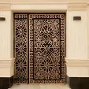
أبواب حديد فاخرة - تصميم كلاسيكي
باب حديد كلاسيكي بتصميم فريد - هناجر 0532228615
يناير 28, 2026
يمثل هذا الباب الحديدي الفاخر قمة الأناقة الكلاسيكية، حيث يجمع بين التصميم التقليدي واللمسات العصرية. تم تصنيعه يدوياً باستخدام حديد عالي الجودة مقاوم للصدأ، مع زخارف بارزة تعكس الإبداع والاحترافية. الباب مجهز بنظام أمان متطور يتضمن أقفال إلكترونية وميكانيكية مزدوجة، مما يضمن أقصى درجات الحماية. يناسب هذا التصميم الفلل والقصور ذات الطابع التراثي، حيث يعزز من جمال الواجهة ويضفي لمسة من الفخامة والتميز.
المميزات: مقاوم للصدأ • نظام أمان مزدوج • تصميم يدوي • مناسب للفلل التراثية
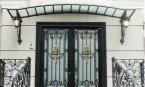
أبواب حديد فاخرة - نقشات عربية
أبواب حديدية بنقوش عربية إسلامية - 0532228615
يناير 28, 2026
يتميز هذا الباب الحديدي بنقوش عربية إسلامية دقيقة تعكس التراث الأصيل، حيث تم تصميمه بدقة عالية باستخدام تقنية القطع بالليزر للحصول على تفاصيل متناهية الدقة. التصميم يجمع بين الأصالة والحداثة، مع مراعاة التوازن الفني بين المساحات المملوءة والمفرغة. الباب معالج بطبقة حماية مزدوجة من الطلاء الإيبوكسي المقاوم للعوامل الجوية، مما يضمن بقاءه بحالة ممتازة لسنوات طويلة. مثالي للمساجد والمنازل ذات الطابع الإسلامي والتراثي.
المميزات: نقشات عربية إسلامية • قطع بالليزر • طلاء إيبوكسي مزدوج • مناسب
للمساجد
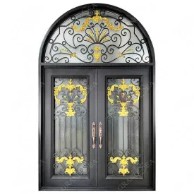
أبواب حديد فاخرة - تصميم عصري
باب حديد عصري بتقنيات متطورة - 0532228615
يناير 28, 2026
يمثل هذا التصميم الحداثة في عالم الأبواب الحديدية، حيث يتميز بخطوط هندسية نظيفة وزوايا دقيقة تعكس الذوق العصري. تم تصنيعه من حديد كربوني عالي السماكة مع تقوية إضافية في المفاصل لضمان المتانة والأمان. الباب مزود بنظام فتح وإغلاق سلس يدوياً وكهربائياً، مع إمكانية التحكم عن بعد. التصميم يناسب المباني التجارية والفنادق والمنازل العصرية، حيث يضفي لمسة من الحداثة والأناقة مع ضمان الأمان والخصوصية.
المميزات: تصميم عصري • فتح وإغلاق كهربائي • حديد كربوني عالي السماكة • مناسب
للمباني التجارية
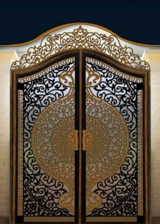
أبواب حديد فاخرة - زخارف نباتية
أبواب حديدية بزخارف نباتية طبيعية - 0532228615
يناير 28, 2026
يتميز هذا الباب بزخارف نباتية مستوحاة من الطبيعة، حيث تتناغم الأوراق والأغصان المنحوتة بتقنية عالية لتخلق تحفة فنية حديدية. التصميم يعتمد على مبدأ التوازن بين القوة والجمال، حيث يجمع بين متانة الحديد ورقّة الزخارف النباتية. تم استخدام تقنية اللحام الأوكسجيني للحصول على نقاط لحام قوية وغير ظاهرة. الباب معالج حرارياً لمقاومة التمدد والانكماش بسبب التغيرات الجوية، مما يضمن أداءً مستقراً على مدار السنة.
المميزات: زخارف نباتية • لحام أوكسجيني • معالجة حرارية • مقاوم للتغيرات الجوية
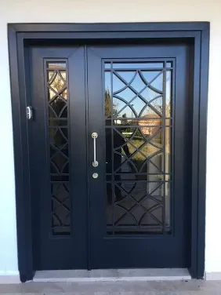
أبواب حديد فاخرة - تصميم ملكي
باب حديد ملكي بلمسات ذهبية - أبواب قصور فاخرة 0532228615
يناير 28, 2026
يمثل هذا الباب الفخم قمة الترف والأناقة، حيث يجمع بين قوة الحديد وبريق الذهب في تناغم رائع. التصميم المستوحى من العمارة الملكية يتميز بتفاصيل دقيقة وزخارف معقدة تعكس الحرفية الرفيعة. تم طلاء الباب بطبقة من الذهب عيار 24 قيراط باستخدام تقنية الطلاء بالكهرباء لضمان ثبات اللون ولمعانه الدائم. الباب مزود بنظام أمان متكامل يتضمن كاميرات مراقبة مصغرة وجهاز بصمة إلكتروني، مما يجعله الخيار الأمثل للقصور والفنادق الفاخرة.
المميزات: طلاء ذهبي عيار 24 • نظام أمان متكامل • تصميم ملكي • مناسب للقصور
الفاخرة
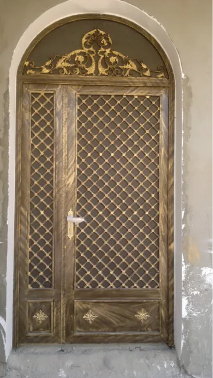
أعمال - أبواب داخلية
أبواب حديدية داخلية بتصميم مفتوح - تفصيل شبابيك 0532228615
يناير 28, 2026
تم تصميم هذا الباب الداخلي المميز لتقسيم المساحات مع الحفاظ على التواصل البصري، حيث يعتمد على نمط التصميم المفتوح مع زخارف هندسية متناسقة. الباب مصنوع من حديد مجلفن خفيف الوزن مع تدعيم بزجاج مقاوم للحريق والكسر. التصميم يسمح بمرور الضوء والهواء مع توفير الخصوصية اللازمة. تم استخدام مفصلات مخفية ومقابض مدمجة للحفاظ على النظافة البصرية للتصميم. مثالي للقصور الحديثة والمباني الذكية التي تهتم بالتفاصيل الدقيقة.
المميزات: تصميم مفتوح • حديد مجلفن خفيف • زجاج مقاوم • مفصلات مخفية
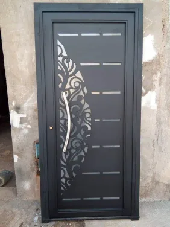
أعمال - أبواب القلعة
أبواب حديدية بتصميم قلعة متوسطية - مؤسسة متكاملة 0532228615
يناير 28, 2026
يستلهم هذا الباب تصميمه من أبواب القلاع الأوروبية القديمة، حيث يجمع بين القوة الهيكلية والجمال التاريخي. تم تصنيعه من حديد صلب بسماكة 8 مم مع تدعيم إضافي في الأطراف ونقاط الارتكاز. الباب مزود بنظام غلق متعدد النقاط يعزز الأمان، مع مفصلات ثقيلة مصممة لتحمل الأوزان الكبيرة. التصميم يناسب الفلل الكبيرة والمنتجات السياحية التي تبحث عن طابع تاريخي مع مراعاة متطلبات الأمان الحديثة.
المميزات: تصميم قلعة • حديد صلب 8 مم • نظام غلق متعدد النقاط • مفصلات ثقيلة
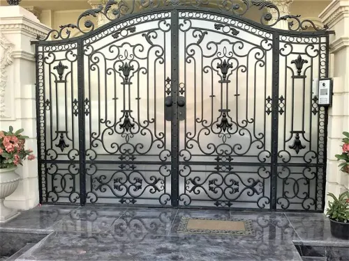
أعمال - أبواب حدائق
أبواب حدائق حديدية بتصميم طبيعي - 0532228615
يناير 28, 2026
تم تصميم هذا الباب خصيصاً للحدائق الخارجية، حيث يتناغم مع الطبيعة المحيطة من خلال استخدام زخارف مستوحاة من العناصر الطبيعية. الباب مصنوع من حديد مجلفن معالج ضد الصدأ بطبقة ثلاثية من الطلاء، مما يجعله مقاوماً للرطوبة والعوامل الجوية القاسية. التصميم المفتوح يسمح برؤية الحديقة من الخارج مع توفير الحماية اللازمة. تم تزويد الباب بمفصلات مقاومة للتآكل ونظام قفل مضاد للمياه، مما يضمن أداءً ممتازاً في جميع الظروف الجوية.
المميزات: تصميم طبيعي • حديد مجلفن • مقاوم للعوامل الجوية • مناسب للحدائق
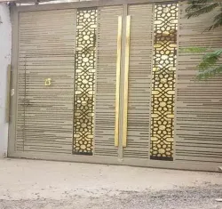
أعمال - أبواب بزجاج ملون
أبواب حديدية مزودة بزجاج ملون فني - اعمال فنية 0532228615
يناير 28, 2026
يجمع هذا التصميم الفريد بين متانة الحديد وجمال الزجاج الملون، حيث تم دمج ألواح زجاجية ملونة بتقنية التيفاني داخل إطار حديدي منحوت بدقة. الزجاج المستخدم من النوع المعزز المقاوم للكسر، مع ألوان ثابتة لا تتأثر بأشعة الشمس. التصميم يخلق تأثيرات ضوئية رائعة داخل المبنى مع توفير الخصوصية. الباب مثالي للمداخل الرئيسية والمساحات الداخلية التي تحتاج إلى لمسة فنية مميزة، حيث يضفي جواً من الجمال والروحانية.
المميزات: زجاج ملون تيفاني • زجاج معزز مقاوم • تأثيرات ضوئية • مناسب للمداخل
الرئيسية
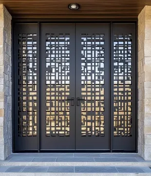
أعمال - أبواب أمنية
أبواب أمنية حديدية عالية المقاومة - أبواب أمنية 0532228615
يناير 28, 2026
تم تصميم هذا الباب الأمني خصيصاً لتوفير أعلى مستويات الحماية، حيث يتكون من طبقتين من الحديد الصلب بينهما طبقة عازلة من مادة مقاومة للقطع والحفر. الباب مزود بنظام قفل متطور يتضمن قفل إلكتروني، قفل ميكانيكي، وقفل مضاد للاقتحام. تم تعزيز الأطراف والمفصلات بدعامات إضافية لمقاومة محاولات الفتح القسري. التصميم يلبي معايير الأمان العالمية ويناسب البنوك والمستودعات والمباني التي تحتاج إلى حماية عالية.
المميزات: طبقتان حديد مع عازل • نظام أقفال متعدد • مقاوم للاقتحام • مناسب
للبنوك
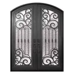
أعمال - أبواب بزخارف هندسية
أبواب حديدية بزخارف هندسية معقدة - تصنيع أبواب حديد 0532228615
يناير 28, 2026
يتميز هذا الباب بتصميم هندسي على أشكال رياضية دقيقة، حيث تتناغم الدوائر والمثلثات والمربعات في تكوين فني رائع. تم تنفيذ الزخارف باستخدام تقنية القطع بالبلازما للحصول على حواف ناعمة ودقيقة. الباب مصنوع من حديد استيل عالي الجودة مع سطح مصقول يعكس الضوء بشكل جميل. التصميم يناسب المباني الحديثة والمعاصرة التي تبحث عن لمسة فنية تعتمد على البساطة والتناسق الهندسي، مع الحفاظ على الوظيفية والمتانة.
المميزات: زخارف هندسية • قطع بالبلازما • حديد استيل مصقول • مناسب للمباني
المعاصرة
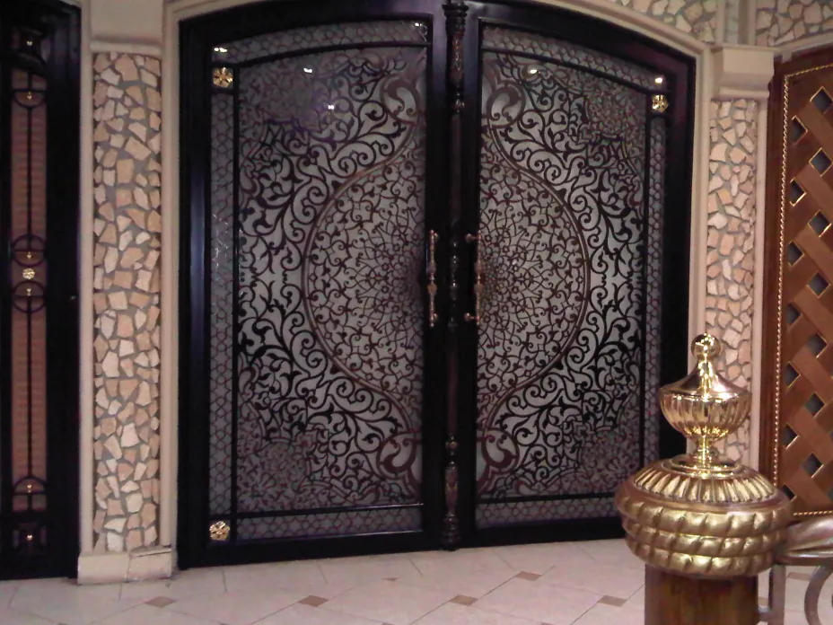
أعمال - أبواب مزدوجة
أبواب حديدية مزدوجة بتصميم فاخر - مؤسسة رائعة ومتكامله و متخصصة 0532228615
يناير 28, 2026
يمثل هذا الباب المزدوج الفاخر قمة الأناقة والعملياتية، حيث تم تصميمه للمداخل الكبيرة والعريضة. الباب يتكون من جزئين متطابقين يفتحان بشكل متناغم، مع نظام تزامن دقيق يضمن حركة سلسة ومتزامنة. تم استخدام مفصلات ثقيلة مخفية تحمل أوزاناً كبيرة دون التأثير على الجمالية. الباب مزود بنظام قفل مركزي يمكن فتحه من كلا الجانبين، مع إمكانية الفتح الجزئي عند الحاجة. التصميم يناسب القصور والفنادق الفاخرة والمباني الرسمية الكبيرة.
المميزات: تصميم مزدوج • نظام تزامن دقيق • مفصلات مخفية • مناسب للمداخل الكبيرة